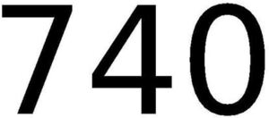

Trade Mark Journal No.2026/007 13 February 2026
WO0000001898812 (3,4)
Office of origin: Brazil
Date of International Registration:6 November 2025
Date of designation in the UK:
6 November 2025

- Class 3
- Air fragrance reed diffusers; cosmetics, other than for medical purposes; astringents for cosmetic purposes; scented water; eau de cologne; lavender water; depilatory water; hydrogen peroxide for cosmetic purposes; antiperspirants [toiletries]; balms, other than for medical purposes; extracts of flowers [perfumes]; lipsticks; lip glosses; hair conditioners; cosmetic creams for face and body care; body deodorants [perfumery]; mouthwashes, not for medical purposes; nail polish; make-up sold in compacts; massage gels, other than for medical purposes; cotton sticks for cosmetic purposes; eyebrow pencils; pencils for cosmetic purposes; tissues impregnated with cosmetic lotions; tissues impregnated with make-up removing preparations; lotions for cosmetic use; after-shave lotions; make-up for the face; beauty masks; essential oils; oils for toilet purposes; oils for cosmetic purposes; disposable wipes impregnated with cleansing chemicals or compounds for cleansing the skin and for intimate personal hygiene, non-medicated; perfumes; make-up powder; lipstick cases; cosmetic preparations for baths; douching preparations for personal sanitary or deodorant purposes [toiletries]; collagen preparations for cosmetic purposes; cleansers for intimate personal hygiene purposes, non-medicated; depilatory preparations; phytocosmetic preparations; bath preparations, not for medical purposes; cosmetic preparations for eyelashes; shaving preparations; sun-tanning preparations [cosmetics]; toiletry preparations; room fragrancing preparations; sun care preparations for cosmetic use; cosmetic preparations for skin care; perfumery; colour-removing preparations; bleaching preparations [decolorants] for cosmetic purposes; smoothing preparations [starching]; make-up preparations; make-up removing preparations; bath soap, body soap, cosmetic soap, facial soap and perfumed soap; antiperspirant soap; shaving soap; bath salts, not for medical purposes; adhesives for cosmetic purposes; talcum powder, for toilet use; cosmetic dyes for the hair, beard, eyebrows and eyelashes; hair dyes; dry shampoos; shampoos.
- Class 4
- Candles and perfumed candles.
NATURA COSMÉTICOS S.A.
Representative: RICCI & ASSOCIADOS PROPRIEDADE INTELECTUAL S/S LTDA, Rua Domingos de Morais, 2781, cj. 1001, 04035-001 São Paulo, BRAZIL